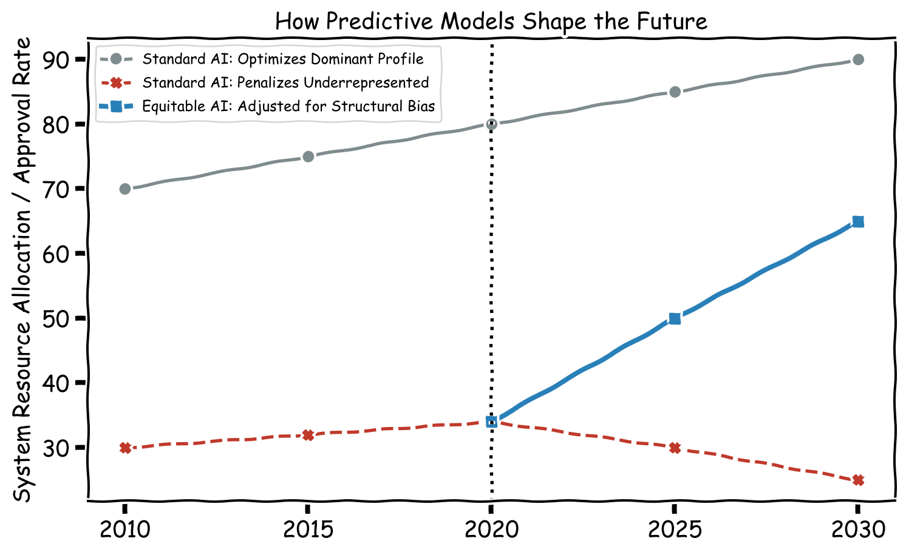

Data has transformed the way businesses, governments, and institutions approach problem-solving. By extracting actionable information through analysis, organizations transition from reacting to the present to forecasting the future.
The financial and operational impact of this transition is highly measurable. According to a 2022 report by McKinsey & Company, businesses that systematically rely on data to drive their commercial strategies grow faster than their competitors, seeing profit margin increases of 15 to 25 percent.
The ability of data systems to adapt, scale, and provide cost-efficient solutions makes predictive modeling essential across all industries. This future of data architecture relies heavily on two interconnected technologies: Artificial Intelligence (AI) and the Internet of Things (IoT).
1. Data and Artificial Intelligence (AI)
As data continues to grow in both volume and complexity, organizations require automated, highly efficient systems to manage and analyze it.
Artificial Intelligence (AI) refers to the ability of a machine or algorithm to learn patterns from historical datasets and make mathematical predictions about future outcomes. AI tools are poised to revolutionize data management by operating at a scale human analysts cannot match.
The Technical Benefits of AI
Automates Data Processing: AI drastically reduces the manual effort required to process data. It can automatically extract data from diverse sources, standardize it, remove duplicates, and impute missing values. This allows analysts to work with high-quality datasets without constant manual intervention.
Improves Data Analysis: AI utilizes advanced mathematical algorithms to process massive, complex datasets, identifying correlations and forecasting trends at speeds impossible for manual computation.
Enhances Data Security: AI protects databases by establishing behavioral baselines. It automatically monitors access logs, detects unusual query patterns in real-time, and blocks potential security breaches before data is compromised.
The Point of Attention: The Predictive Feedback Loop
Because AI requires historical data to “learn” patterns, its predictions are mathematically anchored to the past. If historical data reflects a male-dominated or Occidental-standardized reality (as discussed in Module 1), the AI will predict and optimize for that exact same reality in the future.
Data Management Example: If an AI is trained to predict “creditworthiness,” and historical banking data shows that men were granted loans at higher rates than women, the AI will mathematically predict that male applicants are safer investments. The algorithm is not sentiently biased; it is simply executing a flawless prediction based on an asymmetrical dataset.
2. Data and the Internet of Things (IoT)
The Internet of Things (IoT) refers to the vast network of physical, connected devices that continuously collect, share, and exchange data.
These devices range from domestic household items to heavy industrial machines and healthcare monitors. They are embedded with sensors and software that enable them to interact with their environment and perform autonomous tasks.
The Technical Benefits of IoT
Facilitates Real-Time Data Processing: IoT devices continuously collect localized data (temperature, humidity, motion, location). This steady flow of real-time telemetry helps organizations monitor conditions and respond to physical changes exactly as they occur.
Improves Predictive Analytics: IoT platforms utilize dashboards to visualize incoming data. This allows systems to identify physical patterns (e.g., when a machine part vibrates unusually) and predict mechanical failures before they happen.
Scales Data Management: As organizations deploy more connected devices, IoT cloud architectures are designed to automatically scale, ensuring vast amounts of incoming sensor data are stored without system overload.
The Point of Attention: The Sensor Baseline
Data Management Example: A smart thermostat is a classic IoT device. It senses room temperature and occupancy, automatically adjusting the climate based on algorithmic preferences. However, if the IoT algorithm’s definition of “optimal room temperature” was programmed using the standard 1960s formula (based on the metabolic rate of a 70kg, 40-year-old male), the predictive IoT system will systematically keep the environment too cold for the average female occupant.
3. Can Predictive Models be Female-Centered?
A critical question in modern data science is whether predictive models can be designed to be less masculinist and more structurally equitable. The answer is yes, through a process known as Inclusive Predictive Modeling.
To shift a predictive model away from a male-centric default, data architects must change the mathematical objectives of the algorithm.
Strategies for Equitable Prediction
Redefining the “Success” Variable:
Standard Model: Predicts success based on linear, uninterrupted output (historically favoring male career patterns).
Equitable Model: Predicts success by measuring output relative to structural barriers overcome, accounting for non-linear timelines (such as parental leave or caregiving gaps) as variables of resilience rather than deficits.
Physiological Variance in IoT Sensors:
Standard Model: IoT health monitors flag any deviation from a 70kg male baseline as “atypical” or an “error.”
Equitable Model: IoT sensors are programmed with female-specific physiological baselines, recognizing cyclical biological data (e.g., hormonal shifts) as standard parameters, significantly improving the prediction of female-specific cardiovascular or metabolic events.
Auditing Training Data Representation:
Standard Model: Feeding an AI raw historical data, accepting historical societal imbalances as objective facts.
Equitable Model: Applying synthetic data generation or statistical weighting to underrepresented demographics in the training set before the AI learns from it, ensuring the mathematical prediction does not simply replicate past exclusion.
Visualizing the Predictive Feedback Loop
The following Python-generated chart illustrates the difference between deploying AI on unadjusted historical data versus deploying an equitable predictive model.
Code
import matplotlib.pyplot as pltwith plt.xkcd(): fig, ax = plt.subplots(figsize=(8, 5))# Timelines years = [2010, 2015, 2020, 2025, 2030]# Historical data (starts with a gap) historical_dominant = [70, 75, 80, 85, 90] historical_underrepresented = [30, 32, 34, 30, 25] # AI penalizes based on history# Corrected Equitable AI Prediction equitable_prediction = [30, 32, 34, 50, 65]# Plotting the standard AI loop ax.plot(years, historical_dominant, color='#7f8c8d', marker='o', label='Standard AI: Optimizes Dominant Profile', linewidth=2) ax.plot(years, historical_underrepresented, color='#c0392b', marker='X', label='Standard AI: Penalizes Underrepresented', linestyle='--', linewidth=2)# Plotting the Female-Centered/Equitable prediction ax.plot(years[2:], equitable_prediction[2:], color='#2980b9', marker='s', label='Equitable AI: Adjusted for Structural Bias', linewidth=3)# Annotations ax.axvline(x=2020, color='black', linestyle=':') ax.annotate('AI Deployment\nBegins Here', xy=(2020, 15), xytext=(2017, 5), arrowprops=dict(facecolor='black', shrink=0.05, width=1, headwidth=5), fontsize=10)# Formatting ax.set_ylabel('System Resource Allocation / Approval Rate') ax.set_title('How Predictive Models Shape the Future', fontsize=14) ax.set_xticks(years) ax.legend(loc='upper left', fontsize=9) plt.tight_layout() plt.show()

The Trajectory of AI Predictions Based on Training Data
Summary: The Predictive Balance
Leveraging AI and IoT allows organizations to automate analysis and accurately forecast trends. However, deploying predictive systems requires strict architectural oversight to ensure algorithms do not simply automate historical disparities.
Predictive Technology
Expected Benefit
Point of Attention (The Cost of Bias)
AI Data Processing
Automates data cleaning, standardization, and extraction, reducing manual workload.
Standardization algorithms may automatically delete “anomalous” records that belong to minority demographics.
AI Data Analysis
Processes massive datasets to find correlations and predict future outcomes instantly.
If historical data is asymmetrical, the AI creates a feedback loop that mathematically locks out underrepresented groups.
IoT Real-Time Processing
Sensors continuously collect physical data to monitor and optimize environments.
If the sensor’s baseline assumes a male default (e.g., temperature, grip size), the optimization physically excludes female users.
IoT Predictive Analytics
Identifies patterns in real-time data to forecast system or human behavior.
Surveillance variables in domestic IoT can be repurposed, disproportionately compromising privacy and security for vulnerable populations.
Next Chapter
Proceeding to Module 7
We have now traced the entire data lifecycle: from defining variables, to structuring databases, to extracting information, analyzing it, and utilizing AI to predict the future.
The final phase of data literacy is learning how to observe these outcomes over time. In the concluding module, we will examine how data trends are established, how to accurately track them, and how aggregation can obscure critical realities.
---title: "Module 6: Predictions in Data"subtitle: "AI, IoT, and the Architecture of the Future"author: "Your Name"format: html: toc: true toc-depth: 3 theme: cosmo code-fold: showexecute: warning: false message: falsejupyter: python3---# Introduction: Forecasting the FutureData has transformed the way businesses, governments, and institutions approach problem-solving. By extracting actionable information through analysis, organizations transition from reacting to the present to forecasting the future.The financial and operational impact of this transition is highly measurable. According to a 2022 report by McKinsey & Company, businesses that systematically rely on data to drive their commercial strategies grow faster than their competitors, seeing profit margin increases of 15 to 25 percent.The ability of data systems to adapt, scale, and provide cost-efficient solutions makes predictive modeling essential across all industries. This future of data architecture relies heavily on two interconnected technologies: **Artificial Intelligence (AI)** and the **Internet of Things (IoT)**.---# 1. Data and Artificial Intelligence (AI)As data continues to grow in both volume and complexity, organizations require automated, highly efficient systems to manage and analyze it. **Artificial Intelligence (AI)** refers to the ability of a machine or algorithm to learn patterns from historical datasets and make mathematical predictions about future outcomes. AI tools are poised to revolutionize data management by operating at a scale human analysts cannot match.## The Technical Benefits of AI* **Automates Data Processing:** AI drastically reduces the manual effort required to process data. It can automatically extract data from diverse sources, standardize it, remove duplicates, and impute missing values. This allows analysts to work with high-quality datasets without constant manual intervention.* **Improves Data Analysis:** AI utilizes advanced mathematical algorithms to process massive, complex datasets, identifying correlations and forecasting trends at speeds impossible for manual computation.* **Enhances Data Security:** AI protects databases by establishing behavioral baselines. It automatically monitors access logs, detects unusual query patterns in real-time, and blocks potential security breaches before data is compromised.## The Point of Attention: The Predictive Feedback LoopBecause AI requires historical data to "learn" patterns, its predictions are mathematically anchored to the past. If historical data reflects a male-dominated or Occidental-standardized reality (as discussed in Module 1), the AI will predict and optimize for that exact same reality in the future. * *Data Management Example:* If an AI is trained to predict "creditworthiness," and historical banking data shows that men were granted loans at higher rates than women, the AI will mathematically predict that male applicants are safer investments. The algorithm is not sentiently biased; it is simply executing a flawless prediction based on an asymmetrical dataset.---# 2. Data and the Internet of Things (IoT)The **Internet of Things (IoT)** refers to the vast network of physical, connected devices that continuously collect, share, and exchange data. These devices range from domestic household items to heavy industrial machines and healthcare monitors. They are embedded with sensors and software that enable them to interact with their environment and perform autonomous tasks.## The Technical Benefits of IoT* **Facilitates Real-Time Data Processing:** IoT devices continuously collect localized data (temperature, humidity, motion, location). This steady flow of real-time telemetry helps organizations monitor conditions and respond to physical changes exactly as they occur.* **Improves Predictive Analytics:** IoT platforms utilize dashboards to visualize incoming data. This allows systems to identify physical patterns (e.g., when a machine part vibrates unusually) and predict mechanical failures before they happen.* **Scales Data Management:** As organizations deploy more connected devices, IoT cloud architectures are designed to automatically scale, ensuring vast amounts of incoming sensor data are stored without system overload.## The Point of Attention: The Sensor Baseline* *Data Management Example:* A smart thermostat is a classic IoT device. It senses room temperature and occupancy, automatically adjusting the climate based on algorithmic preferences. However, if the IoT algorithm's definition of "optimal room temperature" was programmed using the standard 1960s formula (based on the metabolic rate of a 70kg, 40-year-old male), the predictive IoT system will systematically keep the environment too cold for the average female occupant. ---# 3. Can Predictive Models be Female-Centered?A critical question in modern data science is whether predictive models can be designed to be less masculinist and more structurally equitable. The answer is yes, through a process known as **Inclusive Predictive Modeling**. To shift a predictive model away from a male-centric default, data architects must change the mathematical objectives of the algorithm.### Strategies for Equitable Prediction1. **Redefining the "Success" Variable:** * *Standard Model:* Predicts success based on linear, uninterrupted output (historically favoring male career patterns). * *Equitable Model:* Predicts success by measuring output relative to structural barriers overcome, accounting for non-linear timelines (such as parental leave or caregiving gaps) as variables of resilience rather than deficits.2. **Physiological Variance in IoT Sensors:** * *Standard Model:* IoT health monitors flag any deviation from a 70kg male baseline as "atypical" or an "error." * *Equitable Model:* IoT sensors are programmed with female-specific physiological baselines, recognizing cyclical biological data (e.g., hormonal shifts) as standard parameters, significantly improving the prediction of female-specific cardiovascular or metabolic events.3. **Auditing Training Data Representation:** * *Standard Model:* Feeding an AI raw historical data, accepting historical societal imbalances as objective facts. * *Equitable Model:* Applying synthetic data generation or statistical weighting to underrepresented demographics in the training set before the AI learns from it, ensuring the mathematical prediction does not simply replicate past exclusion.---# Visualizing the Predictive Feedback LoopThe following Python-generated chart illustrates the difference between deploying AI on unadjusted historical data versus deploying an equitable predictive model.```{python}#| label: ai-prediction-chart#| fig-cap: "The Trajectory of AI Predictions Based on Training Data"#| echo: trueimport matplotlib.pyplot as pltwith plt.xkcd(): fig, ax = plt.subplots(figsize=(8, 5))# Timelines years = [2010, 2015, 2020, 2025, 2030]# Historical data (starts with a gap) historical_dominant = [70, 75, 80, 85, 90] historical_underrepresented = [30, 32, 34, 30, 25] # AI penalizes based on history# Corrected Equitable AI Prediction equitable_prediction = [30, 32, 34, 50, 65]# Plotting the standard AI loop ax.plot(years, historical_dominant, color='#7f8c8d', marker='o', label='Standard AI: Optimizes Dominant Profile', linewidth=2) ax.plot(years, historical_underrepresented, color='#c0392b', marker='X', label='Standard AI: Penalizes Underrepresented', linestyle='--', linewidth=2)# Plotting the Female-Centered/Equitable prediction ax.plot(years[2:], equitable_prediction[2:], color='#2980b9', marker='s', label='Equitable AI: Adjusted for Structural Bias', linewidth=3)# Annotations ax.axvline(x=2020, color='black', linestyle=':') ax.annotate('AI Deployment\nBegins Here', xy=(2020, 15), xytext=(2017, 5), arrowprops=dict(facecolor='black', shrink=0.05, width=1, headwidth=5), fontsize=10)# Formatting ax.set_ylabel('System Resource Allocation / Approval Rate') ax.set_title('How Predictive Models Shape the Future', fontsize=14) ax.set_xticks(years) ax.legend(loc='upper left', fontsize=9) plt.tight_layout() plt.show()```## Summary: The Predictive BalanceLeveraging AI and IoT allows organizations to automate analysis and accurately forecast trends. However, deploying predictive systems requires strict architectural oversight to ensure algorithms do not simply automate historical disparities.| Predictive Technology | Expected Benefit | Point of Attention (The Cost of Bias) || :--- | :--- | :--- || **AI Data Processing** | Automates data cleaning, standardization, and extraction, reducing manual workload. | Standardization algorithms may automatically delete "anomalous" records that belong to minority demographics. || **AI Data Analysis** | Processes massive datasets to find correlations and predict future outcomes instantly. | If historical data is asymmetrical, the AI creates a feedback loop that mathematically locks out underrepresented groups. || **IoT Real-Time Processing** | Sensors continuously collect physical data to monitor and optimize environments. | If the sensor's baseline assumes a male default (e.g., temperature, grip size), the optimization physically excludes female users. || **IoT Predictive Analytics** | Identifies patterns in real-time data to forecast system or human behavior. | Surveillance variables in domestic IoT can be repurposed, disproportionately compromising privacy and security for vulnerable populations. |---## Next Chapter::: {.callout-note}## Proceeding to Module 7We have now traced the entire data lifecycle: from defining variables, to structuring databases, to extracting information, analyzing it, and utilizing AI to predict the future.The final phase of data literacy is learning how to observe these outcomes over time. In the concluding module, we will examine how data trends are established, how to accurately track them, and how aggregation can obscure critical realities.[Module 7: Trends in Data](../07-trends/index.qmd):::